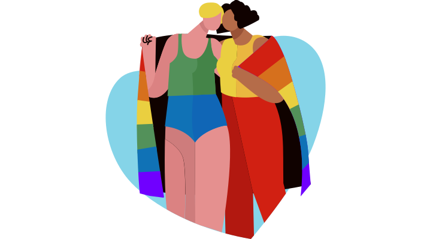
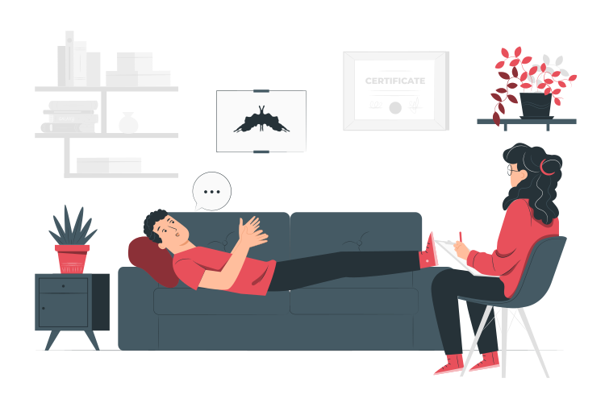
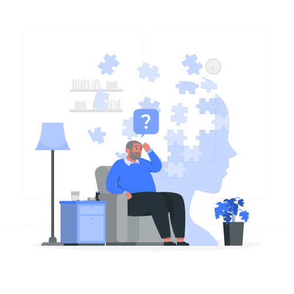

Ce este depresia?
Depresia pe scurt poate fi descrisa ca o stare de tristete prelungita cu accese inexplicabile de
plâns,
irascibilitate, sentimente de inutilitate, de lipsa desperantă, de neajutorare, indiferenta fata de
orice.
Sunt prezente sentimente de vina nejustificate, activitatile agreabile, munca, prietenii care în
trecut
faceau placere
acum nu mai trezesc niciun interes.
Pot aparea diminuari ale capacitatii memoriei, concentrarii, luarii deciziilor, apar gânduri de
moarte
cu/fara tentative
suicidare.
In plan corporal apare lipsa poftei de mincare sau apetit exagerat, insomnia sau somnolenta
excesiva,
dureri corporale
difuze, articulare musculare, crampe abdominale, diaree/constipatie, manifestari care nu au o
cauzalitate medicala
obiectiva.

Psihoterapie LGBT
Azi putem spune ca deja traim intr-o societate care accepta si intelege problemele de orientare
sexuala
si identitate de
gen, INSA, comunitatea LGBT continua sa se confrunte cu greutati care duc la depresie, anxietate,
suferinta emotionala,
respingere etc.
Psihoterapia ofera un spatiu sigur si empatic pentru explorarea problemelor si dificultatilor
specifice
cu care se
confrunta persoanele LGBT.
- Dificultatile generate pot fii:
- Singuratate
- Izolare sociala
- Depresie
- Anxietate
- Tranzitii de gen
- Discriminare
- Dependenta de substante
Terapia anxietatii
Anxietatea se manifestă ca un sentiment neplăcut de frica fara un obiect real, amenințare și
tensiune, variind în
intensitate de la o ușoară neliniște până la atacuri de panică.
Simptomele anxietății încep să apară atunci când ne aflăm într-o situație stresantă și
inconfortabilă, dar ele pot
apărea și fără o cauză evidentă.
Simptomele pot include:
Transpirație
Creșterea ritmului de respirație și a ritmului cardiac
Tulburări de alimentație
Dificultăți de înghițire
Senzație de leșin
Tensiune în mușchi
Tremurături
Aceste simptome pot fi atât de neplăcute încât putem încerca să le eliminăm. Prin urmare, în timp,
începem să evităm
situațiile care ar putea declanșa anxietatea.

Sindromul Bornout
Fiinta umana nu a fost "construita" pentru a functiona fara repaos. Cerintele personale si
profesionale zilnice,
presiunea timpului si asteptarile ridicate (proprii sau din partea altora), alaturi de
situatiile
stresante, favorizeaza
aparitia sindromului de burnout.
Sindromul de burnout este rezultatul stresului cronic sau al stresului gestionat
necorespunzator,
fiind caracterizat
prin instalarea epuizarii si scaderea performantei. Printre solutiile indicate in ameliorarea
si/
sau eliminarea acestui
tip de epuizare se numara: focusarea pe activitatile prezente, analizarea angajamentelor luate,
indisponibilitatea (in
sensul de a nu da curs tuturor invitatiilor si proiectelor), adoptarea si mentinerea unor
obiceiuri
sanatatoase atat din
perspectiva regimului alimentar, cat si a activitatii fizice si a orelor de odihna.
Manifestarile sindromului de burnout nu sunt identice, fiecare individ experimenteaza diferit
epuizarea fizica, psihica,
emotionala, la fel si schimbarile comportamentale survenite.
Semne ale epuizarii emotionale:
Sentimentul de gol interior
Depresia
Frustrarea
Scaderea tolerantei
Schimbari de dispozitie
Lipsa perspectivelor.
Semne ale epuizarii mentale:
Pesimismul
Acutizarea conflictelor cu alte persoane
Neincrederea, suspiciunea
Comportament iresponsabil si nesigur
Lipsa increderii in sine.
Semne ale epuizarii fizice:
Oboseala cronica
Lipsa apetitului
Migrene frecvente
Imunitatea scazuta
Insomnia.
Schimbari de comportament:
Amanarea inceperii unei sarcini
Intarzieri frecvente la locul de munca
Impulsivitatea
Izolarea fata de ceilalti
Consumul exagerat de alcool, tutun, substante interzise
Lipsa entuziasmului
Probleme de concentrare
Neplacerea de a mai lucra
Incapacitatea de a organiza eficient timpul
Lipsa motivarii la locul de munca.
Diagnosticul sindromului de burnout apeleaza la o serie de chestionare pentru autoevaluare care pot face
distinctia
intre epuizarea psihica si fizica si existenta altor afectiuni mentale, asa cum sunt depresia,
anxietatea sau sindromul
de fatigabilitate cronica.

Cum va dati seama daca suferiti de sindromul burnout?
Incercati sa raspundeti la urmatoarele intrebari:
Aveti tendinta de a amana inceperea task-urilor de serviciu?
Ati devenit mai iritabil si nerabdator in relatia cu ceilalti?
Simtiti ca va lipseste in mod constant energia necesara pentru a va indeplini sarcinile profesionale?
Aveti dificultati de concentrare?
Va lipseste satisfactia realizarilor profesionale?
Va simtiti dezamagit cu privire la job-ul dumneavoastra sau la viata privata?
Apelati la mancare, alcool si/ sau alte substante pentru a va simti mai bine sau pentru a scapa de
sentimentul ca "nu va
este bine"?
Au aparut modificari referitor la obiceiurile de somn?
Va confruntati cu dureri inexplicabile de cap, stomac? Tulburari digestive ori alt disconfort fizic?

Stima de sine
Deși adeseori confundate, încrederea în sine nu este același lucru cu stima de sine. Stima de sine
înseamnă capacitatea
de a face față provocărilor vieții plus admirația/iubirea de sine. Există însă și posibilitatea ca stima
de sine să fie
prea ridicată sau prea scăzută, caz în care vorbim despre o diminuare a calității vieții.
Stima de sine reprezinta modul in care ne evaluam pe noi insine in raport cu propriile asteptari si cu
ceilalti si este
direct proportionala cu constientizarea valorii noastre. Fiecare fiinta umana este unica si are o
valoare care merita sa
fie respectata. Valoarea unei fiinte umane este data de suma comportamentelor, actiunilor si
potentialitatilor sale
trecute, prezente si viitoare. Capacitatea fiintei umane de a se proiecta in viitor, de a-si
constientiza, dori si
anticipa devenirea prin raportarea la experientele si succesele anterioare si credinta despre propria
eficacitate
contribuie la intarirea stimei de sine.
Am auzit multi parinti spunand: "Nu faci bine, lasa ca fac eu ca stiu mai bine" sau "Esti prea mic, nu
poti tu sa faci
asta". Astfel de fraze pot ucide in fasa increderea in sine. Din dorinta de a-i feri de suferinte si
esecuri in viata,
multi parinti isi supraprotejeaza copiii mentinandu-i dependenti si impiedicandu-i astfel sa-si dezvolte
increderea in
sine.
Care sunt cauzele apariției depresiei?
Factori considerați ca fiind determinanți în apariția depresiei
Durerea trăită în urma decesului unei persoane dragi, despărțirea de persoana iubită sau alte
pierderi
pot determina
apariția depresiei. Situațiile stresante din viața noastră, cum ar fi un abuz, pierderea locului de
muncă sau schimbarea
bruscă a situației financiare pot de asemenea facilita apariția depresiei.
Drogurile și alcoolul pot determina apariția unui dezechilibru biochimic la nivelul creierului.
Acest
lucru poate cauza
un episod depresiv. Unele persoane depresive recurg la droguri sau alcool pentru "a uita" de
necazuri
dar nu fac decât
să-și agraveze starea depresivă.

Ce pot face dacă am depresie?
Daca avem semne de intrebare legate de prezenta unei tulburari depresive sau daca persoanele
apropiate
semnaleaza ca
ceva este în neregula cu noi, atunci este oportun sa cerem ajutorul unui specialist (medic psihiatru
sau
psiholog cu
formare în psihoterapie).
Prima vizită poate fi la medicul psihiatru care poate sa spuna daca o persoana sufera sau nu de
depresie, care este
intensitatea suferintei și ce tratament medicamentos este recomandat pentru afectiunea respectiva.
Medicul va informa
pacientul despre modul în care actioneaza medicamentele și despre efectele secundare ale acestora.
Fie ca pacientul se hotaraste sau nu sa urmeze un tratament medicamentos, el are optiunea de a urma
o
psihoterapie care
sa il ajute sa depaseasca problema cu care se confrunta.
Hipnoza se aplica în depresie?
Hipnoza folosita în tratarea depresiei,descopera cauza profunda a tulburarii, în timp ce ajuta
persoana
sa gaseasca
strategii de copping eficiente. Deasemenea, ajuta persoanele depresive sa obtina o stare generala
mai
buna caracterizata
de sentimente de fericire și inlatura sau diminueaza gandurile negative care acompanieaza depresia.
Tratamentul
hipnoterapeutic pentru aceasta tulburare utilizeaza o combinatie intre sugestii și imagerie pentru a
aduce schimbari
pozitive în procesul inconstient al persoanei depresive. Persoanele care folosesc hipnoza pentru
depresie vor
experimenta deseori un sentiment de eliberare și un sentiment puternic al detinerii controlului
asupra
gandurilor lor și
asupra vietii lor în general.

Ce este anxietatea sociala / fobia sociala?
Vorbim de fobie socială (sau anxietate socială) atunci când o persoană se simte mereu nesigură,
neliniștită, tensionată
sau chiar îngrozită în anumite tipuri de situații sociale sau în majoritatea situațiilor sociale.
Fobia socială este o formă a anxietății clinice care se întâlnește la 7-12% din oameni (fiind una
dintre
cele mai
prevalente probleme de anxietate) și debutează de regulă în adolescență sau la începutul vârstei
adulte.
În primul rând trebuie să înțelegem că este firesc pentru cei mai mulți oameni ca în anumite
situații
sociale să se
simtă tensionați sau emoționați. De exemplu, poate fi vorba de un interviu, un discurs în fața unui
public, o întâlnire
cu o persoană dragă, o discuție cu o persoană aflată într-o poziție de autoritate (ex. șeful nostru)
sau
cunoașterea
unor persoane noi.
În astfel de situații, ni se poate întâmpla adesea să ne bată inima mai tare, să transpirăm, să ne
înroșim, să ne
tremure vocea sau mâinile.
Dar aceste lucruri de regulă se reduc pe măsură ce trece timpul și ne acomodăm cu situația în care
ne
aflăm și nu ne
împiedică să facem ceea ce ne-am propus.
Nu de puține ori ni se întâmplă să ne uităm înapoi la o astfel de situație și să ne zicem: "Am fost
puțin emoționat, dar
a mers bine! Mi-a plăcut!" sau "M-am cam bâlbâit, dar m-am descurcat eu cumva. N-a fost așa de rău."